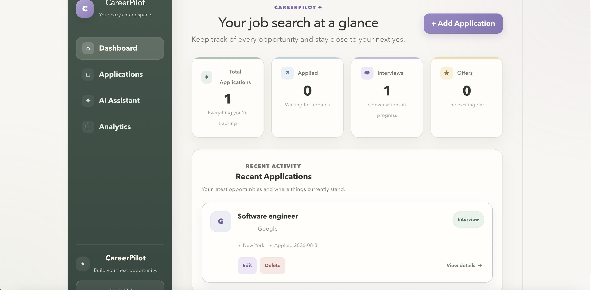
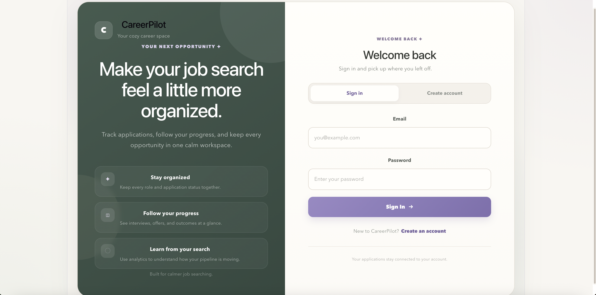
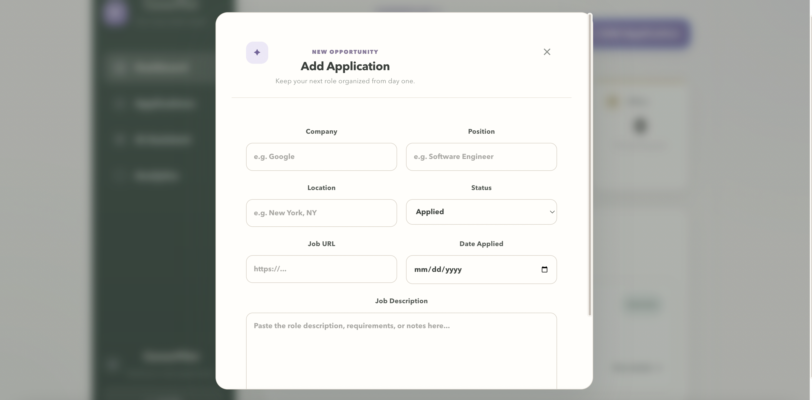
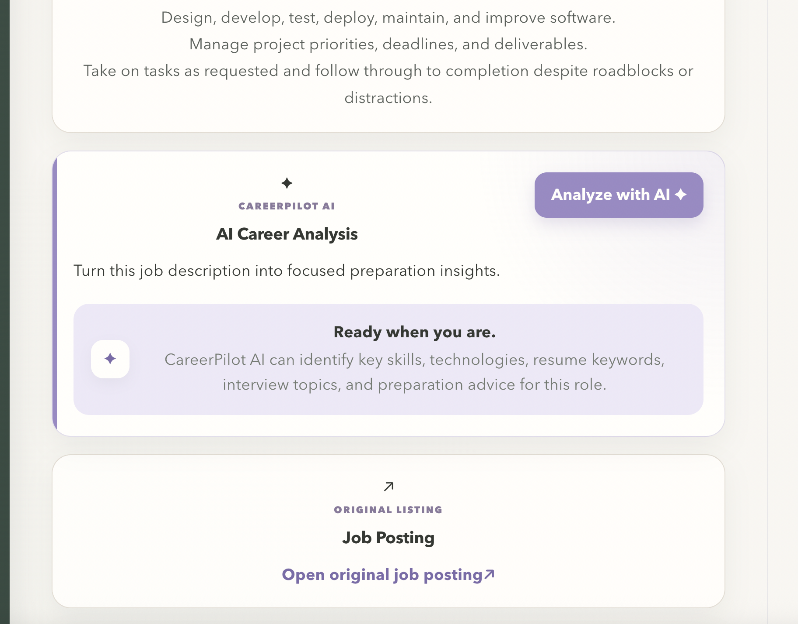
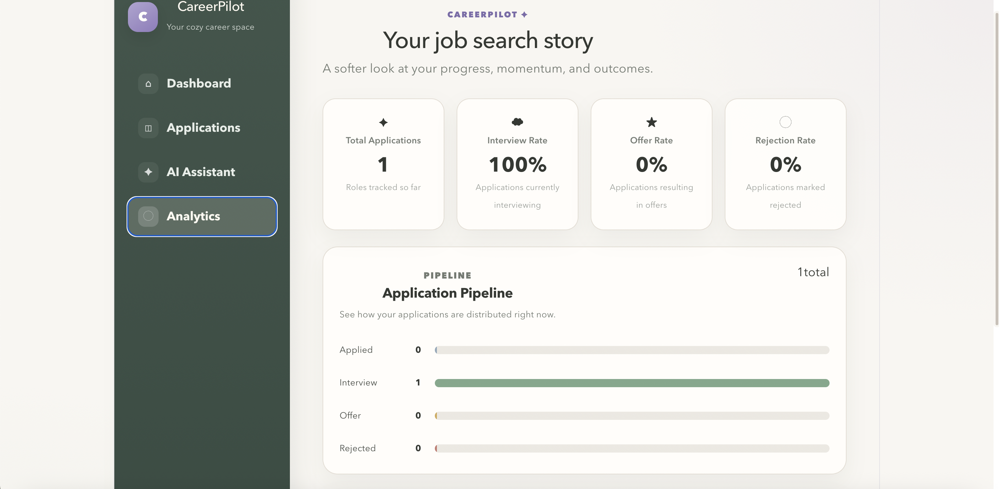

COMPLETED
CareerPilot — AI-Powered Job Application Tracker
Full-stack job application management platform for organizing opportunities, tracking progress through the hiring pipeline, analyzing job descriptions with AI, and visualizing job-search activity through analytics.
- 100% automated application tracking through a full-stack React + Spring Boot architecture with centralized pipeline management and PostgreSQL persistence.
- 50% less manual job-description analysis through OpenAI-powered insights that help streamline application decisions.
- Secure user-specific data with JWT authentication, authorization, and protected REST API endpoints.
React • TypeScript • Spring Boot • Java • PostgreSQL • OpenAI • JWT • Docker